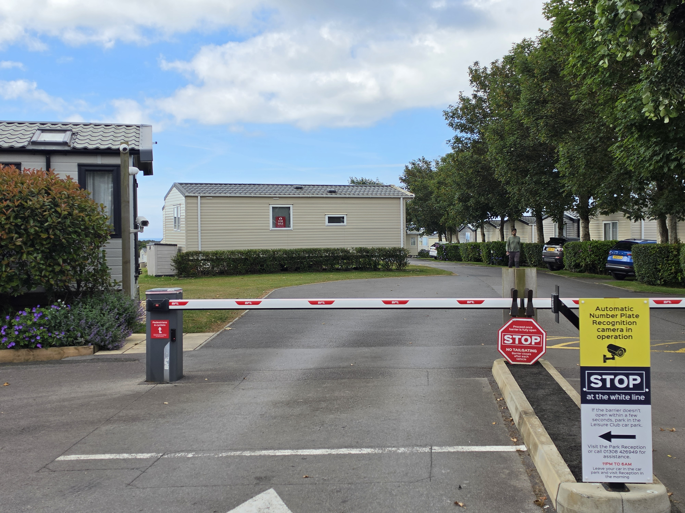

West Dorset Leisure Holidays 如何將 GeoVision ANPR 與訂房系統整合， 讓 Graston Copse Holiday Park 的每一輛入園車輛都能自動完成報到。
West Dorset Leisure Holidays 在英國經營六座度假園區，其中三座已導入 GeoVision ANPR 系統。 這份案例聚焦在 Graston Copse Holiday Park 的建置，由系統整合商 C.I.D. Fire and Security Ltd. 負責執行。
客戶雖然導入了車牌辨識系統，但訂房系統是另一個平台，訪客會在 Booking Experts 系統中輸入抵達日期和車牌號碼。ANPR 系統雖然上線了，卻沒有跟 Booking Experts 整合。 員工仍得在訪客抵達前，把每一筆訂房資訊手動輸入 GeoVision ANPR 資料庫，系統才能辨識車牌並完成比對授權，開啟閘門。 此外，雙排車牌、機車與員工用車，都需要另一套辨識以外的通行方式。
ANPR 未與訂房系統整合，需人工比對授權
雙排車牌、機車與員工用車缺乏自動化通行方式
GeoVision 與 Booking Experts 密切合作，打造並優化兩套系統之間的 API 整合， 並在整個專案過程中投入專職的專案管理與技術支援。
訪客的訂房資訊，包括抵達日期與車牌號碼，現在會自動同步進 GV-ASManager。 訪客抵達時，ANPR 系統會辨識已登記的車輛，自動開啟閘門並完成報到，全程不需要員工介入。
GeoVision 也客製化軟體，讓同一輛車能同時支援多筆未來訂房。 對於機車、雙排車牌與員工用車，則改用戶外鍵盤讀卡機，以密碼方式提供安全通行。

每年約有 30 萬輛車通過這套系統。這樣的流量不再占用員工的行政工時， 讓團隊能把心力放在訪客體驗上，而不是守在閘門前。
我們最近進行訂房系統轉換時，GeoVision 提供的服務水準讓我印象非常深刻。 這次轉換帶來不少獨特的挑戰，需要打造全新的 API 與 SDK。 我們的需求相當複雜，雖然花了一些時間並經過幾次調整，但我很高興系統運作得很順暢，完全符合我們的需求。
ANPR 帶來的自動化為我們節省了行政成本，也減少員工與訪客之間的接觸， 同時讓訪客享有流暢、零接觸的報到體驗。 安全對 WDLH 來說同樣重要，GeoVision 的 ANPR 方案提供了我們所需要的安全等級。 未來幾年，我們計畫在既有三套系統之外，再增設更多 GeoVision ANPR 系統。
JSJosh StevensTechnical Manager, West Dorset Leisure Holidays
GeoVision 這次交付的不只是一套 ANPR 方案。透過與客戶及 Booking Experts 的密切合作， GeoVision 打造出一套客製化整合，在自動化訪客通行的同時，也讓度假園區的日常營運變得更簡單。
這個專案展現了 GeoVision 在垂直應用領域的能力，包括彈性的軟體整合、客製化開發， 以及從頭到尾的專職技術支援。